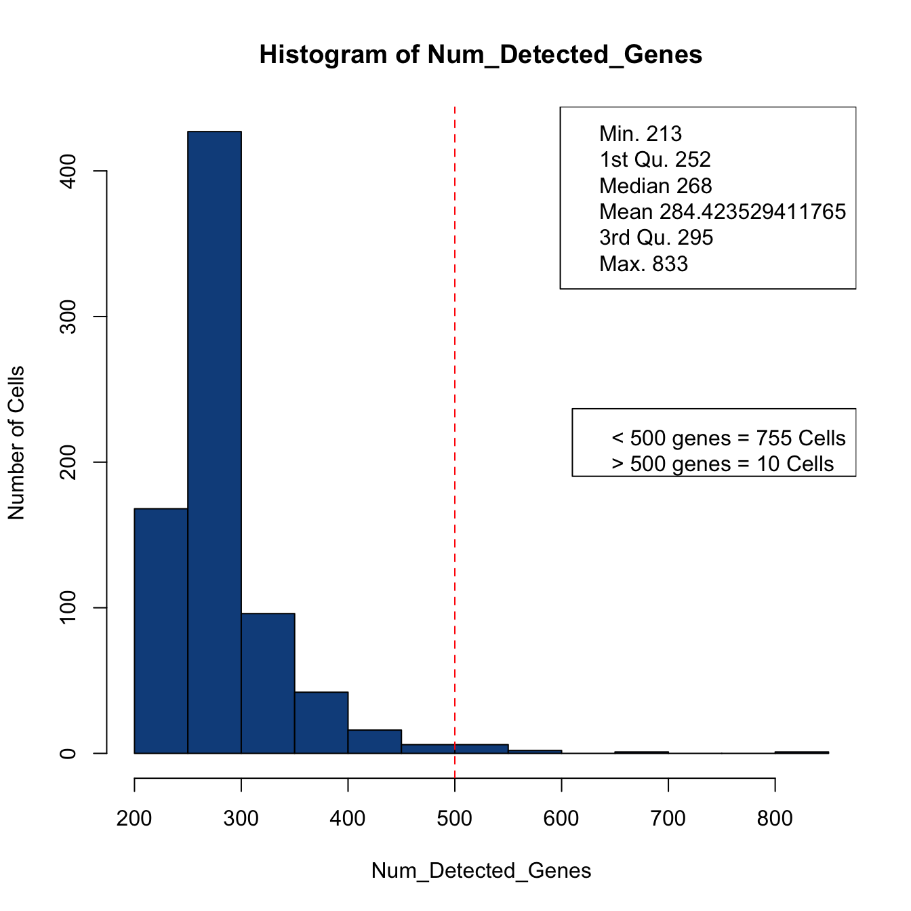
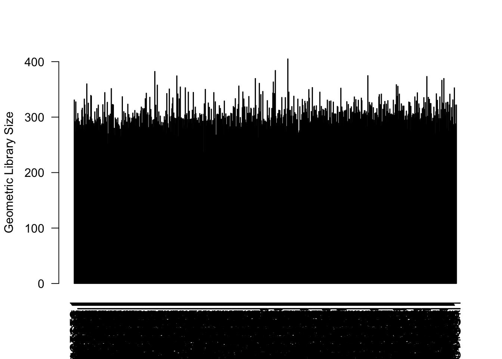
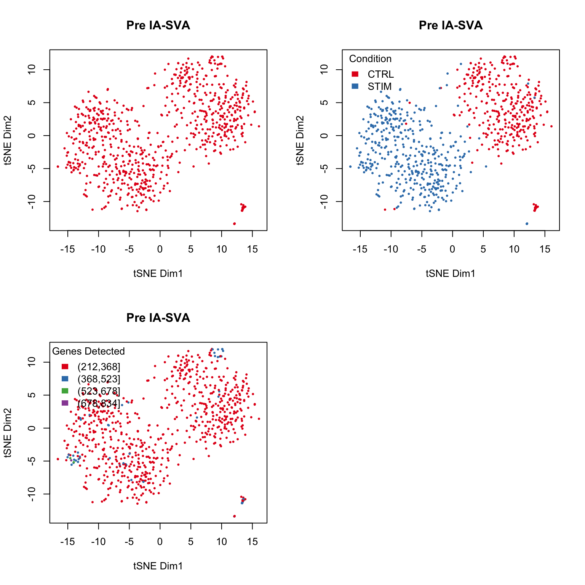
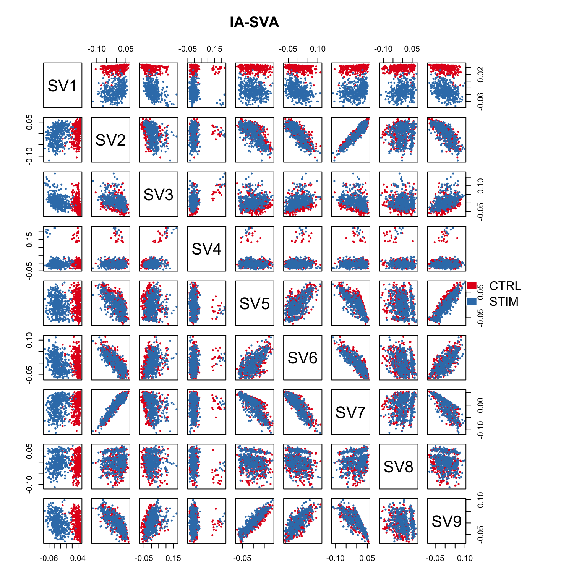
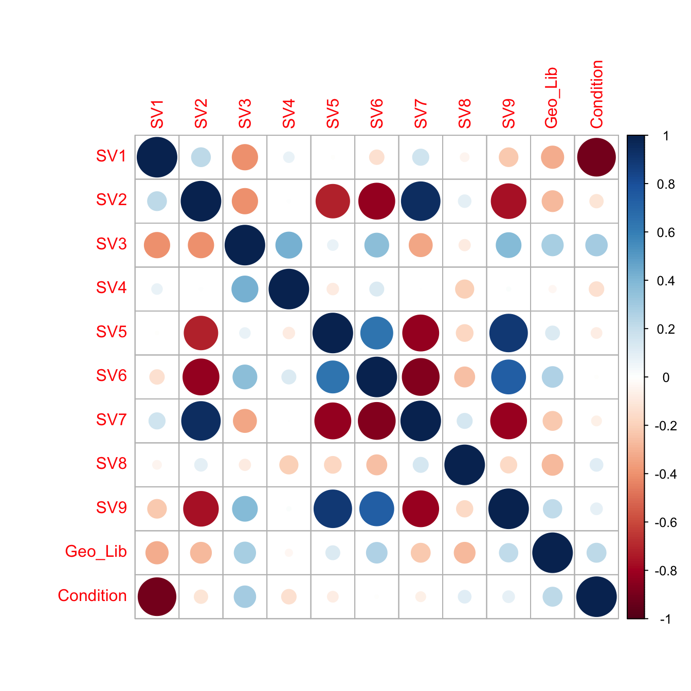
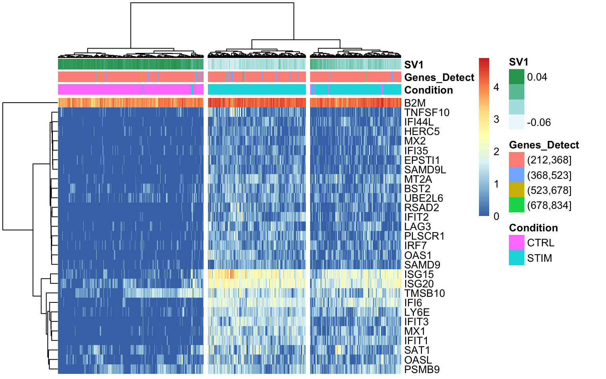
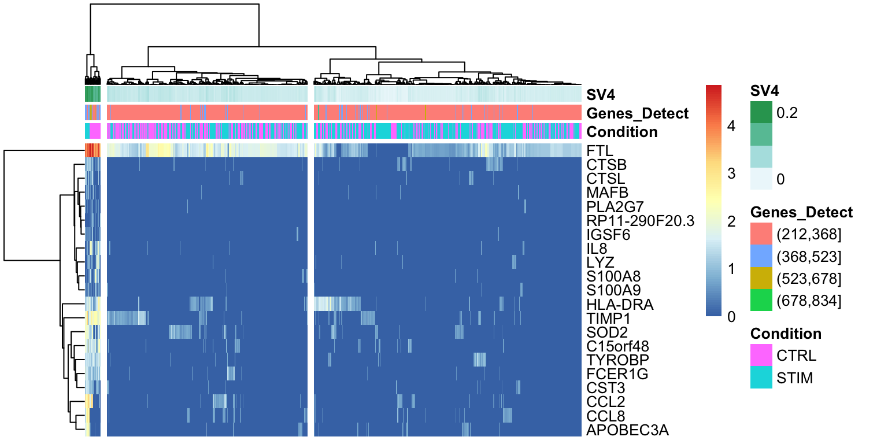
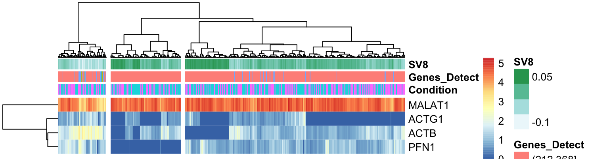
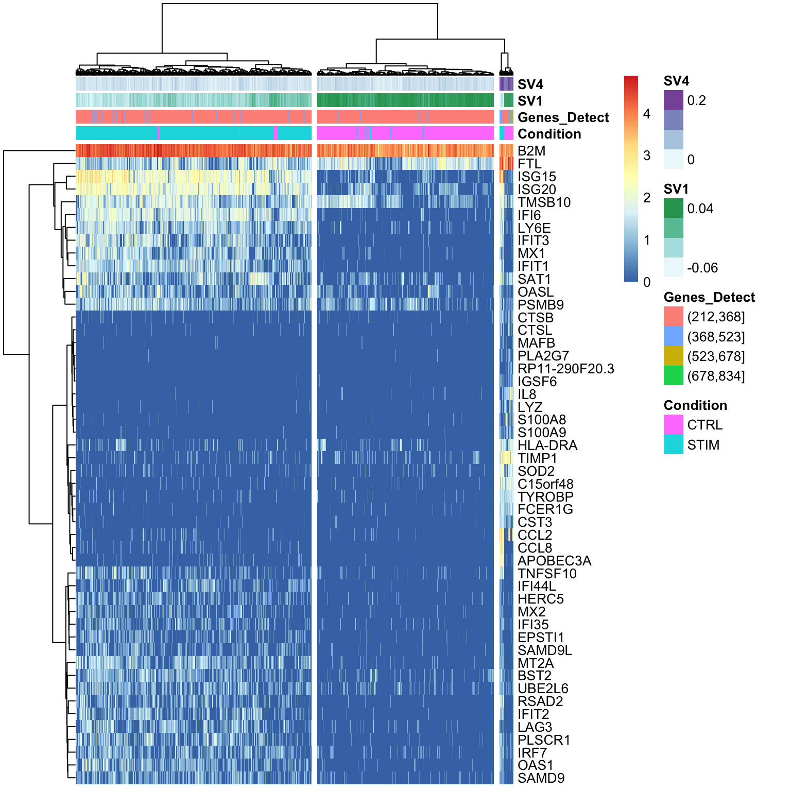
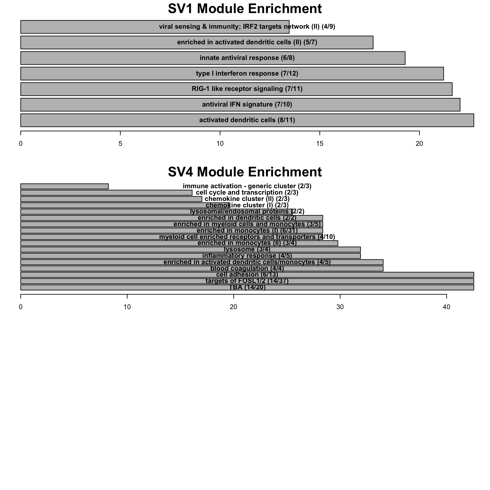

Last updated: 2018-06-26
workflowr checks: (Click a bullet for more information) ✔ R Markdown file: up-to-date
Great! Since the R Markdown file has been committed to the Git repository, you know the exact version of the code that produced these results.
✔ Environment: empty
Great job! The global environment was empty. Objects defined in the global environment can affect the analysis in your R Markdown file in unknown ways. For reproduciblity it’s best to always run the code in an empty environment.
✔ Seed:
set.seed(20180622)
The command set.seed(20180622) was run prior to running the code in the R Markdown file. Setting a seed ensures that any results that rely on randomness, e.g. subsampling or permutations, are reproducible.
✔ Session information: recorded
Great job! Recording the operating system, R version, and package versions is critical for reproducibility.
✔ Repository version: a6dd180
wflow_publish or wflow_git_commit). workflowr only checks the R Markdown file, but you know if there are other scripts or data files that it depends on. Below is the status of the Git repository when the results were generated:
Ignored files:
Ignored: .DS_Store
Ignored: .Rhistory
Ignored: .Rproj.user/
Ignored: R/.DS_Store
| File | Version | Author | Date | Message |
|---|---|---|---|---|
| Rmd | a6dd180 | dleelab | 2018-06-26 | moved |
Here, we used a version of IA-SVA (iasva2) using residuals as dependent variables in each iteration.
rm(list = ls())
library(Seurat)
library(leedonghyung)
library(SummarizedExperiment)
library(irlba)
library(Rtsne)
library(RColorBrewer)
library(pheatmap)
library(corrplot)
library(tmod)
library(tagcloud)
library(limma)
library(VennDiagram)
library(ggrepel)
library(data.table)
# normalize function
normalize <- function (counts)
{
normfactor <- colSums(counts)
return(t(t(counts)/normfactor)*median(normfactor))
}
color.vec <- c("#e41a1c", "#377eb8", "#4daf4a", "#984ea3", "#ff7f00", "black", "#a65628", "#f781bf", "#999999")path <- ("~/Dropbox/CZI_project/Public_Data/Kang_2017/")
name <- "Kang.2017.all.cells"
ctrl.data <- as.data.frame(fread(paste0("gzcat ", path,"immune_control_expression_matrix.txt.gz")))Warning in fread(paste0("gzcat ", path,
"immune_control_expression_matrix.txt.gz")): Detected 13019 column names
but the data has 13020 columns (i.e. invalid file). Added 1 extra default
column name for the first column which is guessed to be row names or an
index. Use setnames() afterwards if this guess is not correct, or fix the
file write command that created the file to create a valid file.dim(ctrl.data)[1] 35635 13020rownames(ctrl.data) <- ctrl.data$V1
ctrl.data$V1 <- NULL
dim(ctrl.data)[1] 35635 13019#head(ctrl.data[,1:5])
stim.data <- as.data.frame(fread(paste0("gzcat ", path,"immune_stimulated_expression_matrix.txt.gz")))Warning in fread(paste0("gzcat ", path,
"immune_stimulated_expression_matrix.txt.gz")): Detected 12875 column names
but the data has 12876 columns (i.e. invalid file). Added 1 extra default
column name for the first column which is guessed to be row names or an
index. Use setnames() afterwards if this guess is not correct, or fix the
file write command that created the file to create a valid file.dim(stim.data)[1] 35635 12876rownames(stim.data) <- stim.data$V1
stim.data$V1 <- NULL
dim(stim.data)[1] 35635 12875#head(stim.data[,1:5])
# Set up control object
ctrl <- CreateSeuratObject(raw.data = ctrl.data, project = "IMMUNE_CTRL", min.cells = 5)
ctrl@meta.data$stim <- "CTRL"
ctrl <- FilterCells(ctrl, subset.names = "nGene", low.thresholds = 500, high.thresholds = Inf)
ctrl <- NormalizeData(ctrl)
ctrl <- ScaleData(ctrl, display.progress = F)
# Set up stimulated object
stim <- CreateSeuratObject(raw.data = stim.data, project = "IMMUNE_STIM", min.cells = 5)
stim@meta.data$stim <- "STIM"
stim <- FilterCells(stim, subset.names = "nGene", low.thresholds = 500, high.thresholds = Inf)
stim <- NormalizeData(stim)
stim <- ScaleData(stim, display.progress = F)
# Gene selection for input to CCA
ctrl <- FindVariableGenes(ctrl, do.plot = F)
stim <- FindVariableGenes(stim, do.plot = F)
g.1 <- head(rownames(ctrl@hvg.info), 2000)
g.2 <- head(rownames(stim@hvg.info), 2000)
genes.use <- union(g.1, g.2)
# combine data
ctrl.data.sel <- ctrl.data[genes.use, rownames(ctrl@meta.data)]
stim.data.sel <- stim.data[genes.use, rownames(stim@meta.data)]
all.counts <- cbind(ctrl.data.sel, stim.data.sel)
dim(all.counts)[1] 3161 14039# overdispersed genes
#saveRDS(all.counts, file = "immune_control_stimulated_filtered_counts.Rds")# load data
all.counts <- readRDS("~/Dropbox/Kang.2017/IASVA/By_Celltype/Kang.2017.by.cell.CD8 T.overdispersed_raw_counts.Rds")
dim(all.counts)[1] 2000 765# load in seurat annotations
imm.comb <- readRDS("~/Dropbox/Kang.2017/Kang.2017.PBMC.stimulated.Seurat.immune.combined.Rds")
imm.meta <- imm.comb@meta.data
imm.meta <- cbind(imm.meta, imm.comb@ident)
colnames(imm.meta)[ncol(imm.meta)] <- "celltype"
dim(imm.meta)[1] 14039 6all.meta <- imm.meta
imm.meta <- imm.meta[imm.meta$celltype == "CD8 T",]
table(rownames(imm.meta) == colnames(all.counts))
TRUE
765 # calculate lib size
#pdf(file = paste(name, cell_interest, "IASVA.genes.detected.hist.pdf", sep = "."))
Num_Detected_Genes <- colSums(all.counts > 0)
hist(Num_Detected_Genes, col = "dodgerblue4", breaks = 20, ylab = "Number of Cells")
summ <- summary(Num_Detected_Genes)
legend("topright", legend = paste(names(summ), summ))
abline(v = 500, col = "red", lty = 2)
legend("right", legend = paste("< 500 genes = ", length(which(Num_Detected_Genes < 500)), " Cells\n",
"> 500 genes = ", length(which(Num_Detected_Genes > 500)), " Cells", sep = ""))
#dev.off()Here, the only known factors are stimulation, celltype, and library size
# make vector of condition
Condition <- factor(imm.meta$stim)
CellType <- factor(imm.meta$celltype)
# normalize counts
counts.filt <- normalize(all.counts)
Geo_Lib <- colSums(log(counts.filt+1))
Num_Detected_Genes <- colSums(all.counts > 0)
# categorize lib size
Geo_Lib_Cat <- cut(Num_Detected_Genes, breaks = 4)
summary(Geo_Lib) Min. 1st Qu. Median Mean 3rd Qu. Max.
236.3 289.6 300.6 303.4 314.2 405.0 barplot(Geo_Lib, xlab="Cell", las=2, ylab = "Geometric Library Size") 
lcounts <- log(counts.filt + 1)
lcounts <- as.matrix(lcounts)
# PC1 and Geometric library size correlation
pc1 = irlba(lcounts - rowMeans(lcounts), 1)$v[,1] ## partial SVD
cor(Geo_Lib, pc1)[1] -0.3826994cor(Num_Detected_Genes, pc1)[1] -0.2425153cor(as.numeric(Condition), pc1)[1] -0.7981066cor(Num_Detected_Genes, Geo_Lib)[1] 0.6914553#tsne.res <- Rtsne(unique(t(lcounts)), dims = 2)
#saveRDS(tsne.res, file = paste(name, "tsne.preIASVA.Rds", sep = "."))
# load tsne results
tsne.res <- readRDS("~/Dropbox/Kang.2017/IASVA/By_Celltype/Kang.2017.by.cell.CD8 T.tsne.preIASVA.Rds")
# by celltype
par(mfrow=c(2,2))
#par(mar=c(5.1, 4.1, 4.1, 8.1), xpd=TRUE)
plot(tsne.res$Y[,1:2], main="Pre IA-SVA", xlab="tSNE Dim1",
ylab="tSNE Dim2", pch=20, col=color.vec[CellType],
bg=color.vec[CellType], cex = 0.5)
#par(xpd=TRUE)
legend(50,20, levels(CellType), border="white", fill=color.vec, bty="n", title = "Cell Type")
# by condition
#par(mar=c(5, 4, 4, 2), xpd=FALSE)
plot(tsne.res$Y[,1:2], main="Pre IA-SVA", xlab="tSNE Dim1",
ylab="tSNE Dim2", pch=20, col=color.vec[Condition],
bg=color.vec[Condition], oma=c(4,4,6,12), cex = 0.5)
legend("topleft", levels(Condition), border="white", fill=color.vec, bty="n", title = "Condition")
# by genes detect
plot(tsne.res$Y[,1:2], main="Pre IA-SVA", xlab="tSNE Dim1",
ylab="tSNE Dim2", pch=20, col=color.vec[Geo_Lib_Cat],
bg=color.vec[Geo_Lib_Cat], oma=c(4,4,6,12), cex = 0.5)
legend("topleft", levels(Geo_Lib_Cat), border="white", fill=color.vec, bty="n", title = "Genes Detected")
# run iasva
mod <- model.matrix(~Num_Detected_Genes)
summ_exp <- SummarizedExperiment(assays = as.matrix(counts.filt))
pct_cutt <- 1
iasva.res<- fast_iasva2(summ_exp, mod[,-1, drop = F], verbose=FALSE, pct.cutoff = pct_cutt, num.sv = 10)fast IA-SVA running...
SV 1 Detected!
SV 2 Detected!
SV 3 Detected!
SV 4 Detected!
SV 5 Detected!
SV 6 Detected!
SV 7 Detected!
SV 8 Detected!
SV 9 Detected!
# of obtained surrogate variables: 9# load results
#iasva.res <- readRDS("/Users/lawlon/Documents/CZI/Seurat_Public_Data/immune_alignment_expression_matrices/IASVA/By_Celltype/Kang.2017.by.cell.CD8 T.IASVA.1.output.Rds")
iasva.sv <- iasva.res$sv
#saveRDS(iasva.res, file = paste(name, "IASVA", pct_cutt, "output.Rds", sep = "."))
#markers_pct1 <- find_markers(Y = summ_exp, iasva.sv = iasva.sv)
#markers_pct1 <- readRDS("/Users/lawlon/Documents/CZI/Seurat_Public_Data/immune_alignment_expression_matrices/IASVA/By_Celltype/Kang.2017.by.cell.CD8 T.IASVA.1.markers.Rds")
# revised find markers function
#source("/Users/lawlon/iasva_markers_update/R/find_markers.R")
#all_markers <- .GlobalEnv$find_markers(Y = summ_exp, iasva.sv = iasva.sv)
# all_markers <- readRDS("/Users/lawlon/Documents/CZI/Seurat_Public_Data/immune_alignment_expression_matrices/IASVA/All_Cells/Kang.2017.all.cells.IASVA.by.SV.markers.Rds")
#saveRDS(markers_pct1, file = paste(name, "IASVA", pct_cutt, "markers.Rds", sep = "."))
# tsne on markers
# set.seed(100)
# if (ncol(markers_pct1) > 100) {
# perplex <- 30
# } else {
# perplex <- round(ncol(markers_pct1)/4)
# }
# tsne.res.iasva <- Rtsne(unique(t(log(markers_pct1+1))), dims = 2, perplexity = perplex)
# saveRDS(tsne.res.iasva, file = paste(name, cell_interest, stim_cond, "IASVA", pct_cutt, "tsne.markers.Rds", sep = "."))ncol(iasva.sv)[1] 9# if (ncol(iasva.sv) > 5) {
# pairs(iasva.sv[,1:5], main="IA-SVA", pch=20, col=color.vec[CellType],
# bg=color.vec[CellType], cex=0.5, oma=c(4,4,6,12))
# legend("right", levels(CellType), border="white", fill=color.vec, bty="n")
# pairs(iasva.sv[,1:5], main="IA-SVA", pch=20, col=color.vec[Condition],
# bg=color.vec[Condition], cex=0.5, oma=c(4,4,6,12))
# legend("right", levels(Condition), border="white", fill=color.vec, bty="n")
# pairs(iasva.sv[,1:5], main="IA-SVA", pch=20, col=color.vec[Geo_Lib_Cat],
# bg=color.vec[Geo_Lib_Cat], cex=0.5, oma=c(4,4,6,12))
# legend("right", levels(Geo_Lib_Cat), border="white", fill=color.vec, bty="n")
# } else {
par(mar=c(5.1, 4.1, 4.1, 8.2), xpd=TRUE)
pairs(iasva.sv, main="IA-SVA", pch=20, col=color.vec[Condition],
bg=color.vec[Condition], cex=0.5, oma=c(4,4,6,12))
legend("right", levels(Condition), border="white", fill=color.vec, bty="n")
# }Use SVs separate cells. For example, SV1, SV4, SV8 are good candidates for further analysis.
iasva_vars <- cbind(iasva.sv, Geo_Lib, Condition)
corrplot(cor(iasva_vars))
SV1.marker.counts <- leedonghyung::find_markers(summ_exp, as.matrix(iasva.sv[,1]), rsq.cutoff=0.2)# of markers (): 29total # of unique markers: 29dim(SV1.marker.counts)[1] 29 765anno.col <- data.frame(Condition = Condition, Genes_Detect = Geo_Lib_Cat, #CellType = CellType,
SV1 = iasva.sv[,1]) #SV4= iasva.sv[,4])
rownames(anno.col) <- colnames(SV1.marker.counts)
pheatmap(log(SV1.marker.counts+1), show_colnames =FALSE,
clustering_method = "ward.D2",cutree_cols = 3,annotation_col = anno.col)
#annotation_colors = anno.colors)SV4.marker.counts <- leedonghyung::find_markers(summ_exp, as.matrix(iasva.sv[,4]), rsq.cutoff=0.2)# of markers (): 21total # of unique markers: 21dim(SV4.marker.counts)[1] 21 765anno.col <- data.frame(Condition = Condition, Genes_Detect = Geo_Lib_Cat, #CellType = CellType,
SV4 = iasva.sv[,4])
rownames(anno.col) <- colnames(SV4.marker.counts)
pheatmap(log(SV4.marker.counts+1), show_colnames =FALSE,
clustering_method = "ward.D2",cutree_cols = 3,annotation_col = anno.col)
#annotation_colors = anno.colors)SV8.marker.counts <- leedonghyung::find_markers(summ_exp, as.matrix(iasva.sv[,8]), rsq.cutoff=0.1)# of markers (): 4total # of unique markers: 4dim(SV8.marker.counts)[1] 4 765anno.col <- data.frame(Condition = Condition, Genes_Detect = Geo_Lib_Cat, #CellType = CellType,
SV8 = iasva.sv[,8])
rownames(anno.col) <- colnames(SV8.marker.counts)
pheatmap(log(SV8.marker.counts+1), show_colnames =FALSE,
clustering_method = "ward.D2",cutree_cols = 3,annotation_col = anno.col)
#annotation_colors = anno.colors)SV1.SV4.marker.counts <- leedonghyung::find_markers(summ_exp, iasva.sv[,c(1,4)], rsq.cutoff=0.2)# of markers (SV1): 29# of markers (SV4): 21total # of unique markers: 50dim(SV1.SV4.marker.counts)[1] 50 765anno.col <- data.frame(Condition = Condition, Genes_Detect = Geo_Lib_Cat, #CellType = CellType,
SV1 = iasva.sv[,1], SV4= iasva.sv[,4])
rownames(anno.col) <- colnames(SV1.SV4.marker.counts)
pheatmap(log(SV1.SV4.marker.counts+1), show_colnames =FALSE,
clustering_method = "ward.D2",cutree_cols = 3,annotation_col = anno.col)
#annotation_colors = anno.colors)all_markers <- find_markers2(summ_exp, iasva.sv[,c(1,4,8)], rsq.cutoff=0.1)
design <- model.matrix(~Condition)
fit <- eBayes(lmFit(counts.filt, design))
tt <- topTable(fit, coef=2, number=Inf, genelist = rownames(counts.filt))
head(tt, 10) ID logFC AveExpr t P.Value adj.P.Val
IFI6 IFI6 4.155695 2.4715532 30.86154 1.901052e-136 3.802103e-133
ISG20 ISG20 6.166130 4.2543065 28.84359 2.344150e-124 2.344150e-121
LY6E LY6E 2.275560 1.4753772 22.16629 1.852983e-84 1.235322e-81
IFIT1 IFIT1 2.263660 1.3338630 21.98045 2.280983e-83 1.140491e-80
ISG15 ISG15 9.143282 5.6337820 21.00109 1.169060e-77 4.676239e-75
MX1 MX1 2.161043 1.2862691 20.46429 1.474206e-74 4.914020e-72
IFIT3 IFIT3 2.294797 1.3573009 17.79413 1.575853e-59 4.502437e-57
MT2A MT2A 1.394209 0.8412955 17.64957 9.741352e-59 2.435338e-56
B2M B2M 20.623514 59.8255245 16.74569 7.446528e-54 1.654784e-51
OAS1 OAS1 1.141619 0.6790883 15.59160 8.555397e-48 1.711079e-45
B
IFI6 300.69783
ISG20 273.03930
LY6E 181.72352
IFIT1 179.22773
ISG15 166.15724
MX1 159.05937
IFIT3 124.66183
MT2A 122.85158
B2M 111.67864
OAS1 97.81698# iterative analysis of SVs an modules
all_sv_res <- list()
par(mfrow = c(3,1), mar = c(4,2,2,2))
for (j in 1:3) {
sv_genes <- all_markers[[j]]
# module analysis
fg <- tt[sv_genes,]
fg.ord <- fg[order(fg$logFC, decreasing = T),]
res <- tmodHGtest(fg = fg.ord$ID, bg = tt$ID)
res.ord <- res[order(res$E, decreasing = T),]
# append results
all_sv_res[[j]] <- res.ord
names(all_sv_res)[j] <- names(all_markers)[j]
if (nrow(res.ord) > 1) {
# make plots
bp1 <- barplot(res.ord$E, main = paste(names(all_markers)[j], " Module Enrichment", sep = ""), xlab = "", horiz = T,
cex.main = 2, cex.lab = 2)
#barplot(res.ord$E, xlab = "Module Enrichment", main = paste(names(all_markers)[j], " Genes", sep = ""), horiz = T)
par(xpd=TRUE)
text(x = max(res.ord$E)/2, y = bp1[,1], labels = paste(res.ord$Title, " (", res$b, "/", res$B, ")", sep = ""), cex = 1, font = 2)
}
}
sessionInfo()R version 3.5.0 (2018-04-23)
Platform: x86_64-apple-darwin15.6.0 (64-bit)
Running under: macOS Sierra 10.12.6
Matrix products: default
BLAS: /Library/Frameworks/R.framework/Versions/3.5/Resources/lib/libRblas.0.dylib
LAPACK: /Library/Frameworks/R.framework/Versions/3.5/Resources/lib/libRlapack.dylib
locale:
[1] en_US.UTF-8/en_US.UTF-8/en_US.UTF-8/C/en_US.UTF-8/en_US.UTF-8
attached base packages:
[1] grid parallel stats4 stats graphics grDevices utils
[8] datasets methods base
other attached packages:
[1] data.table_1.11.4 ggrepel_0.8.0
[3] VennDiagram_1.6.20 futile.logger_1.4.3
[5] limma_3.36.2 tagcloud_0.6
[7] Rcpp_0.12.17 tmod_0.36
[9] corrplot_0.84 pheatmap_1.0.10
[11] RColorBrewer_1.1-2 Rtsne_0.13
[13] irlba_2.3.2 SummarizedExperiment_1.10.1
[15] DelayedArray_0.6.1 BiocParallel_1.14.1
[17] matrixStats_0.53.1 Biobase_2.40.0
[19] GenomicRanges_1.32.3 GenomeInfoDb_1.16.0
[21] IRanges_2.14.10 S4Vectors_0.18.3
[23] BiocGenerics_0.26.0 leedonghyung_1.0
[25] Seurat_2.3.2 Matrix_1.2-14
[27] cowplot_0.9.2 ggplot2_2.2.1.9000
loaded via a namespace (and not attached):
[1] reticulate_1.8 R.utils_2.6.0 tidyselect_0.2.4
[4] htmlwidgets_1.2 trimcluster_0.1-2 ranger_0.10.1
[7] munsell_0.4.3 codetools_0.2-15 ica_1.0-2
[10] withr_2.1.2 colorspace_1.3-2 knitr_1.20
[13] rstudioapi_0.7 geometry_0.3-6 ROCR_1.0-7
[16] robustbase_0.93-0 dtw_1.20-1 dimRed_0.1.0
[19] lars_1.2 git2r_0.21.0 GenomeInfoDbData_1.1.0
[22] mnormt_1.5-5 bit64_0.9-7 rprojroot_1.3-2
[25] lambda.r_1.2.3 ipred_0.9-6 diptest_0.75-7
[28] R6_2.2.2 VGAM_1.0-5 hdf5r_1.0.0
[31] flexmix_2.3-14 DRR_0.0.3 bitops_1.0-6
[34] assertthat_0.2.0 SDMTools_1.1-221 scales_0.5.0
[37] nnet_7.3-12 beeswarm_0.2.3 gtable_0.2.0
[40] ddalpha_1.3.3 workflowr_1.0.1 timeDate_3043.102
[43] rlang_0.2.1 CVST_0.2-2 scatterplot3d_0.3-41
[46] RcppRoll_0.3.0 splines_3.5.0 lazyeval_0.2.1
[49] ModelMetrics_1.1.0 acepack_1.4.1 plotwidgets_0.4
[52] broom_0.4.4 checkmate_1.8.5 yaml_2.1.19
[55] reshape2_1.4.3 abind_1.4-5 backports_1.1.2
[58] Hmisc_4.1-1 caret_6.0-80 tools_3.5.0
[61] lava_1.6.1 psych_1.8.4 gplots_3.0.1
[64] proxy_0.4-22 ggridges_0.5.0 plyr_1.8.4
[67] base64enc_0.1-3 zlibbioc_1.26.0 purrr_0.2.5
[70] RCurl_1.95-4.10 rpart_4.1-13 pbapply_1.3-4
[73] zoo_1.8-2 sfsmisc_1.1-2 cluster_2.0.7-1
[76] magrittr_1.5 futile.options_1.0.1 lmtest_0.9-36
[79] RANN_2.5.1 mvtnorm_1.0-8 whisker_0.3-2
[82] fitdistrplus_1.0-9 evaluate_0.10.1 XML_3.98-1.11
[85] mclust_5.4 gridExtra_2.3 compiler_3.5.0
[88] tibble_1.4.2 KernSmooth_2.23-15 R.oo_1.22.0
[91] htmltools_0.3.6 segmented_0.5-3.0 Formula_1.2-3
[94] snow_0.4-2 tidyr_0.8.1 tclust_1.4-1
[97] lubridate_1.7.4 formatR_1.5 diffusionMap_1.1-0
[100] magic_1.5-8 MASS_7.3-50 fpc_2.1-11
[103] R.methodsS3_1.7.1 gdata_2.18.0 metap_0.9
[106] bindr_0.1.1 gower_0.1.2 igraph_1.2.1
[109] pkgconfig_2.0.1 foreign_0.8-70 recipes_0.1.3
[112] foreach_1.4.4 XVector_0.20.0 prodlim_2018.04.18
[115] stringr_1.3.1 digest_0.6.15 pls_2.6-0
[118] tsne_0.1-3 rmarkdown_1.9 htmlTable_1.12
[121] kernlab_0.9-26 gtools_3.5.0 modeltools_0.2-21
[124] nlme_3.1-137 jsonlite_1.5 bindrcpp_0.2.2
[127] pillar_1.2.3 lattice_0.20-35 DEoptimR_1.0-8
[130] survival_2.42-3 glue_1.2.0 FNN_1.1
[133] png_0.1-7 prabclus_2.2-6 iterators_1.0.9
[136] bit_1.1-14 class_7.3-14 stringi_1.2.2
[139] mixtools_1.1.0 doSNOW_1.0.16 latticeExtra_0.6-28
[142] caTools_1.17.1 dplyr_0.7.5 ape_5.1 sessionInfo()R version 3.5.0 (2018-04-23)
Platform: x86_64-apple-darwin15.6.0 (64-bit)
Running under: macOS Sierra 10.12.6
Matrix products: default
BLAS: /Library/Frameworks/R.framework/Versions/3.5/Resources/lib/libRblas.0.dylib
LAPACK: /Library/Frameworks/R.framework/Versions/3.5/Resources/lib/libRlapack.dylib
locale:
[1] en_US.UTF-8/en_US.UTF-8/en_US.UTF-8/C/en_US.UTF-8/en_US.UTF-8
attached base packages:
[1] grid parallel stats4 stats graphics grDevices utils
[8] datasets methods base
other attached packages:
[1] data.table_1.11.4 ggrepel_0.8.0
[3] VennDiagram_1.6.20 futile.logger_1.4.3
[5] limma_3.36.2 tagcloud_0.6
[7] Rcpp_0.12.17 tmod_0.36
[9] corrplot_0.84 pheatmap_1.0.10
[11] RColorBrewer_1.1-2 Rtsne_0.13
[13] irlba_2.3.2 SummarizedExperiment_1.10.1
[15] DelayedArray_0.6.1 BiocParallel_1.14.1
[17] matrixStats_0.53.1 Biobase_2.40.0
[19] GenomicRanges_1.32.3 GenomeInfoDb_1.16.0
[21] IRanges_2.14.10 S4Vectors_0.18.3
[23] BiocGenerics_0.26.0 leedonghyung_1.0
[25] Seurat_2.3.2 Matrix_1.2-14
[27] cowplot_0.9.2 ggplot2_2.2.1.9000
loaded via a namespace (and not attached):
[1] reticulate_1.8 R.utils_2.6.0 tidyselect_0.2.4
[4] htmlwidgets_1.2 trimcluster_0.1-2 ranger_0.10.1
[7] munsell_0.4.3 codetools_0.2-15 ica_1.0-2
[10] withr_2.1.2 colorspace_1.3-2 knitr_1.20
[13] rstudioapi_0.7 geometry_0.3-6 ROCR_1.0-7
[16] robustbase_0.93-0 dtw_1.20-1 dimRed_0.1.0
[19] lars_1.2 git2r_0.21.0 GenomeInfoDbData_1.1.0
[22] mnormt_1.5-5 bit64_0.9-7 rprojroot_1.3-2
[25] lambda.r_1.2.3 ipred_0.9-6 diptest_0.75-7
[28] R6_2.2.2 VGAM_1.0-5 hdf5r_1.0.0
[31] flexmix_2.3-14 DRR_0.0.3 bitops_1.0-6
[34] assertthat_0.2.0 SDMTools_1.1-221 scales_0.5.0
[37] nnet_7.3-12 beeswarm_0.2.3 gtable_0.2.0
[40] ddalpha_1.3.3 workflowr_1.0.1 timeDate_3043.102
[43] rlang_0.2.1 CVST_0.2-2 scatterplot3d_0.3-41
[46] RcppRoll_0.3.0 splines_3.5.0 lazyeval_0.2.1
[49] ModelMetrics_1.1.0 acepack_1.4.1 plotwidgets_0.4
[52] broom_0.4.4 checkmate_1.8.5 yaml_2.1.19
[55] reshape2_1.4.3 abind_1.4-5 backports_1.1.2
[58] Hmisc_4.1-1 caret_6.0-80 tools_3.5.0
[61] lava_1.6.1 psych_1.8.4 gplots_3.0.1
[64] proxy_0.4-22 ggridges_0.5.0 plyr_1.8.4
[67] base64enc_0.1-3 zlibbioc_1.26.0 purrr_0.2.5
[70] RCurl_1.95-4.10 rpart_4.1-13 pbapply_1.3-4
[73] zoo_1.8-2 sfsmisc_1.1-2 cluster_2.0.7-1
[76] magrittr_1.5 futile.options_1.0.1 lmtest_0.9-36
[79] RANN_2.5.1 mvtnorm_1.0-8 whisker_0.3-2
[82] fitdistrplus_1.0-9 evaluate_0.10.1 XML_3.98-1.11
[85] mclust_5.4 gridExtra_2.3 compiler_3.5.0
[88] tibble_1.4.2 KernSmooth_2.23-15 R.oo_1.22.0
[91] htmltools_0.3.6 segmented_0.5-3.0 Formula_1.2-3
[94] snow_0.4-2 tidyr_0.8.1 tclust_1.4-1
[97] lubridate_1.7.4 formatR_1.5 diffusionMap_1.1-0
[100] magic_1.5-8 MASS_7.3-50 fpc_2.1-11
[103] R.methodsS3_1.7.1 gdata_2.18.0 metap_0.9
[106] bindr_0.1.1 gower_0.1.2 igraph_1.2.1
[109] pkgconfig_2.0.1 foreign_0.8-70 recipes_0.1.3
[112] foreach_1.4.4 XVector_0.20.0 prodlim_2018.04.18
[115] stringr_1.3.1 digest_0.6.15 pls_2.6-0
[118] tsne_0.1-3 rmarkdown_1.9 htmlTable_1.12
[121] kernlab_0.9-26 gtools_3.5.0 modeltools_0.2-21
[124] nlme_3.1-137 jsonlite_1.5 bindrcpp_0.2.2
[127] pillar_1.2.3 lattice_0.20-35 DEoptimR_1.0-8
[130] survival_2.42-3 glue_1.2.0 FNN_1.1
[133] png_0.1-7 prabclus_2.2-6 iterators_1.0.9
[136] bit_1.1-14 class_7.3-14 stringi_1.2.2
[139] mixtools_1.1.0 doSNOW_1.0.16 latticeExtra_0.6-28
[142] caTools_1.17.1 dplyr_0.7.5 ape_5.1 This reproducible R Markdown analysis was created with workflowr 1.0.1